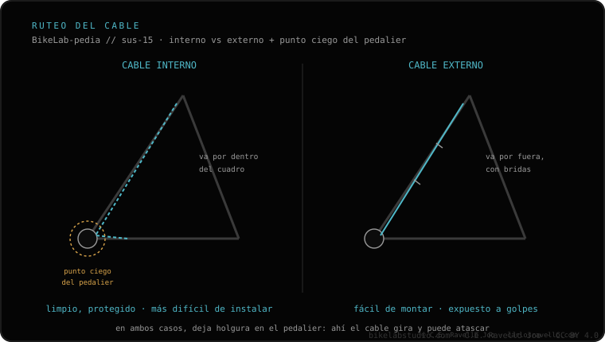

El orden que evita rehacer el trabajo: 1) rutear el cable (interno o externo, según cómo esté preparado tu cuadro); 2) fijar la altura del sillín; 3) cortar la funda a medida; 4) tensar el cable en el mando; 5) ajustar la posición del mando. Para el ruteo interno, el truco del imán o pasar antes un cable viejo de guía te salva en el punto ciego del pedalier.
Montar una dropper no es difícil; lo que asusta es el cable interno. Con el orden correcto y un truco para el pedalier, entra a la primera.
Los pasos, en orden
1 · Rutear el cable — Interno o externo según tu cuadro. En interno, pasa el cable por dentro del cuadro hasta la tija; en externo, va por fuera, sujeto al cuadro. Este es el paso que decide la dificultad de todo el montaje.
2 · Fijar la altura del sillín — Coloca la tija a la altura que pedaleas y fíjala. Hazlo antes de tensar el cable, porque si la cambias después tendrás que rehacer la tensión.
3 · Cortar la funda a medida — Mide y corta la funda para que el recorrido al manillar sea limpio, sin codos forzados ni sobrante que pellizque. Una funda mal cortada mete fricción.
4 · Tensar el cable en el mando — Fija el cable en el mando con la tensión justa: ni flojo (no acciona) ni pasado (mantiene la válvula medio abierta).
5 · Ajustar la posición del mando — Gira y coloca el mando en el manillar donde lo alcances con el pulgar sin soltar el agarre. Aprieta a su par y prueba el accionamiento.

El orden de instalación y dónde el ruteo interno se complica.
Truco clave: para el ruteo interno, usa el truco del imán para arrastrar el cable por dentro del cuadro, o pasa primero un cable viejo como guía. El punto ciego del pedalier es donde casi todo el mundo se atasca; con guía, deja de ser un problema.